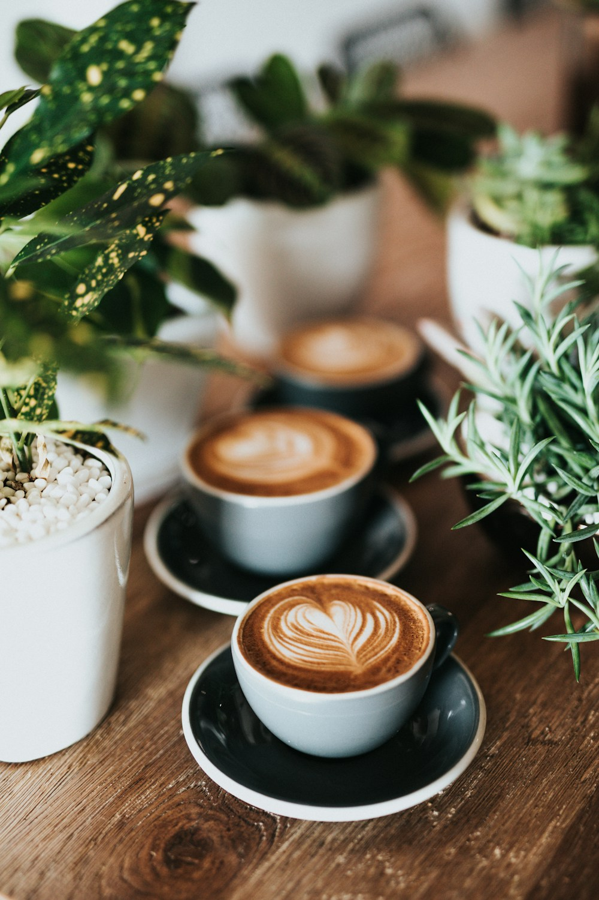

Our Watchmaker Lineage
Preserving the Sacred Craft of the Bench
Mechanic Time Ox was established by master horologists and micro-mechanical engineers dedicated to preserving the fine finishing arts of traditional haute horology.
From hand-drawn steel pinions and black-polished tourbillon cages to manual rose engine guilloché dials engraved one line at a time, our calibers stand as living monuments to mechanical beauty and chronometric excellence.
Visit Our Manhattan Manufacture →